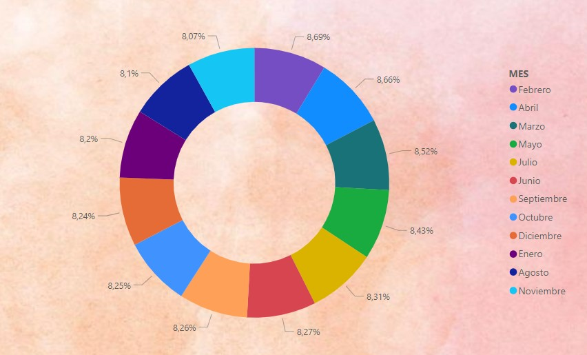

Chapter 11 Power BI
Definición
11.1 Ejemplo 1
Objetivos: • Desarrollar un Dashboard interactivo que facilite y sintetice la comprensión de un conjunto de datos. • Extraer conclusiones relevantes de los datos mediante la creación de visualizaciones efectivas.
Actividades requeridas: 1. Recopilación de datos: o Obtener una base de datos de Kaggle (https://www.kaggle.com/datasets) o utilizar datos de su proyecto de investigación.
Se extrajo datos del índice de Precios al Consumidor (IPC), mismo que es un indicador mensual, nacional y para nueve ciudades, que mide los cambios en el tiempo del nivel general de los precios, correspondientes al consumo final de bienes y servicios de los hogares de estratos de ingreso: alto, medio y bajo, residentes en el área urbana del país.
La Canasta Familiar Básica (CFB) es un conjunto de bienes y servicios que son imprescindibles para satisfacer las necesidades básicas del hogar tipo compuesto por 4 miembros con 1,6 perceptores de ingresos, que ganan la remuneración básica unificada. Calcular el costo de esta canasta es necesario para el análisis de la relación entre remuneraciones e inflación. Los datos son obtenidos de Kaggle (2024) en base a la información proporcionada por el Instituto Nacional de Estadísticas y Cesos (INEC), donde recopila 384 observaciones.
- Proceso ETL (Extracción, Transformación y Carga): Prepararamos los datos para su análisis mediante limpieza, transformación y carga en Power BI.
Una vez realizado el proceso ETL, en la Figura 1 se puede observar el ingreso familiar mensual por año, durante este periodo el promedio es de $73,52, sin duda esto se ocasiona por la falta de empleos estables que no les permiten acceder a las personas a salarios básicos, en cambio el ingreso familiar mensual promedio máximo es de $79333.
Cabe importante mencionar que el SBU (salario básico unificado) en el 2000 fue de $56,65, en el 2005 de $150,00, desde el 2010 hasta el 2016 el alza del SBU ha sido en promedio de $20 dólares por año, en el año 2020 y 2021 el valor se congeló en $400,00 a causa de la emergencia sanitaria por el COVID, en el 2022 y 2023 se realizó el alza de $25,00 dólares y para el 2024 el alza de este rubro ha decrecido con respecto al año anterior en apenas $10.00. Sin embargo, hay personas que perciben salarios sumamente elevados a los ingresos promedio del país, siendo recibido por el quintil más alto, aumentando la desigualdad.
Figura 1. Ingreso familiar mensual por añoEn la Figura 2 se analiza el promedio de las fluctuaciones de los costos de la canasta básica mensual por año, el costo mínimo de la canasta básica en este periodo es de $128,26 y el costo máximo es de $753,62, desde el mes de julio de 2000 se calcula el ingreso familiar con un hogar tipo de cuatro miembros, no obstante, la línea de color de blanco muestra el ingreso, hasta el 2015 el ingreso que percibían era mayor al costo de la canasta básica, de ahí en adelante el ingreso no avanza a cubrir la canasta básica.
Figura 2. Costo de la canasta básica mensual por añoLa Figura 3 muestra el promedio de la canasta básica por año de acuerdo al gobierno de turno, podemos considerar que en el gobierno de León Febres Cordero el promedio de canasta básica fue de $183,00 dólares y en el de Guillermo Lasso el costo fue de $724,00, existen varios factores que inciden en el incremento del precio de la canasta básica, siendo uno de los principales la alta dependencia a las materias primas, bienes intermedios, además problemas económicos, políticos y sociales.
Figura 3. Promedio de la canasta básica por año de acuerdo al gobierno de turnoEn la Figura 4 se evidencia el ingreso promedio por cada mes en función del porcentaje general, donde febrero, marzo y abril tienen los porcentajes más alto con 8,69; 8,66; y 8,52%, se puede justificar con el pago de utilidades que las empresas deben cancelar en ese mes, y porque se registra en la Costa el pago de la bonificación del décimo cuarto sueldo.
Figura 4. Ingreso promedio mensual En la Figura 5 se presenta la restricción de consumo, es decir, cuanto pueden comprar con el ingreso que consumen, esto se ha realizado por meses, donde se observa que en todos los meses tenemos restricción de consumo, las familias ecuatorianas deben limitar sus gastos y satisfacer únicamente las necesidades prioritarias; en este caso se presenta la mayor restricción en septiembre, esto es debido a las temporadas escolares en la Sierra que les permite destinar sus ingresos a la compra de útiles escolares; y luego le sigue agosto, que se justifica por la razón antes detallada. Por tanto, se recomienda que las familias de nuestro país busquen nuevas fuentes de ingreso para no depender únicamente de un SBU.
Figura 5. Restricción de consumo promedio por mesEn la Figura 6 mostramos la relación del precio promedio de la canasta básico con el ingreso mensual familiar de acuerdo a cada mes, donde gráficamente se observa que de forma general, el precio promedio de la canasta básica supera al ingreso promedio de las familias ecuatorianas, donde marzo el único mes donde hay un superávit del ingreso, y esto se explica por el pago de utilidades a empleados del sector privado, y para enero ocurre lo mismo por el pago de décimos en el mes de diciembre.
Figura 6. Comparación del precio promedio de la canasta básica con el ingreso mensualFinalmente, se presenta la Figura 7 se muestra como el precio promedio de la canasta básica se explica por el nivel de ingresos, gobierno de turno y de acuerdo al mes. En este sentido, el gobierno de Lenin Moreno explica en mayor medida el aumento de la canasta básica específicamente en un aumento de $314,10; seguido tenemos el gobierno de Rafael Correa que explica en un incremento de $169,50, y finalmente el ingreso en $152,80.
Figura 7. Ingreso familiar influyente por gobiernoEvidencia del proceso antes detallado:
11.2 Ejemplo 2
- Abre el archivo de Excel titulado “VENTAS GENERALES_TAREA”.
- Importe todas las hojas (Ventas, Sucursal, Vendedor, Tipo, Producto y Categoría).
- Limpia las bases originales.
Se procede a limpiar la base para continuar con el respectivo análisis
- Crea una nueva consulta denominada “VENTAS GENERALES” con las siguientes columnas: Factura, Fecha, Sucursal, Nombre de la ciudad, Vendedor, Tipo de producto, Descripción del tipo, Producto, Categoría y Venta.
- Crea un Parámetro llamado “Porcentaje” con un valor del 2% (0,02).
- Establece una columna personalizada llamada “Comisión a cobrar” donde se calcule la Venta multiplicada por el Porcentaje.
- Genera una nueva tabla que agrupe por vendedor y que se resuma por la suma de las Ventas_tot1 llamada “Agrupar_1”
- Genera una nueva tabla que agrupe por vendedor y producto y además que se resuma por la suma de las Ventas_tot2; llamada “Agrupar_2”
Cierra y aplica los cambios para guardarlos y salir del editor de Power Query.
Revisa las relaciones con la tabla VENTAS GENERALES. Si falta alguna, agrégala. Si el programa estableció alguna relación directa, revísala y corrígela si es necesario.
- Crea una “Nueva Columna” llamada “Descuento” donde se calcule el 1% de las Ventas (ventas * 0,01).
- Crea una tabla calendario utilizando funciones basadas en la columna “Fecha” de la tabla VENTAS GENERALES. Nota: La tabla calendario debe contener año, mes, mes en texto, y día en texto.

- Debes crear medidas para calcular: a) Ventas totales en dólares, b) Conteo de ventas.
- Desarrolla un informe que conste de 5 páginas:
14.1. Tres hojas de detalle: Ventas por sucursal (Mapa: quitar título al mapa y leyenda centrada a la izquierda), Ventas por vendedor (Columnas agrupadas: grafique la línea de promedio), Ventas por producto (Barras: grafique la línea promedio); Ventas por fecha (proyecta las ventas); Haz un análisis de componentes principales (Ventas en función de ciudad, producto, vendedor). Utiliza herramientas que permitan visualizar adecuadamente la información, con visualizaciones diferentes y agregando métricas pertinentes.
14.2. Una hoja dashboard que aplique tarjetas, filtros y otros visualizadores que proyecten la información más relevante.
14.3. Una hoja índice para establecer la relación entre las diferentes hojas.
14.4. Analiza la información.
En la Figura 1 podemos observar el promedio de ventas por vendedor, José lidera las ventas con un promedio de $735 mil, en segundo lugar, está Joel con $701 mil, posterior se ubica Saúl con $691; en contraste los vendedores con ventas menores del promedio de ventas son Andrea, Mariana y Mauricio con menos de $662 mil.
Figura 1. Ventas por vendedor
En la Figura 2 se analiza el promedio de ventas por producto, claramente se puede percibir que el grupo de vinos son los productos con más ventas ocupando los primeros lugares de la lista de productos, el vino 5 tiene ventas promedias de $7.580 mil, y contrariamente el producto con menos ventas son los tacos arrachera con ventas de $790 mil muy por debajo del promedio de ventas.
Figura 2. Promedio de venta por productoEn la Figura 3 se observa el promedio de ventas por mes, verificando que en el mes de julio las ventas son superiores lo que podría darse por varias razones como que muchos trabajadores reciben una bonificación a finales del mes de junio teniendo más dinero disponible para gastar en el mes de julio, adicional en el mes de julio se celebra la Feria de las Flores en Medellín siendo un evento muy concurrido por turistas. El mes de abril es el segundo en la lista que refleja ventas más altas lo cual podría ser por la Semana Santa, puesto que, esta fecha es una de las festividades mas importantes en Colombia, adicional en el mes de abril inicia el cambio de temporada de primavera/verano lo que puede llevar a un incremento en la compra de ropa y artículos relacionados con la nueva estación.
En cambio, se observa que el mes de enero tiene las ventas más bajas lo cual podría ser por los gastos de las festividades de Navidad y Año Nuevo muchas de las personas tienen menos disponibilidad de dinero, adicional en el mes de enero los estudiantes están de vacaciones lo que podría reflejar una reducción en el consumo regular.
Figura 3. Promedio de ventas por mesEn la Figura 4 se analizará la variable promedio de venta desde categoría y producto, en el cual se reflejará que la categoría mas vendida es Vinos, indicando que esta categoría se vende 5.45 millones más en comparación del resto de los valores de Categorías. Con lo cual se puede indicar que la Categoría Vinos si es un elemento clave en el promedio de ventas, esto se puede dar puesto que los colombianos han desarrollado un gusto creciente por el vino, el vino se ha integrado mas en la vida cotidiana y en celebraciones, con lo que ha aumentado la opción de ser una bebida exclusiva; además en Colombia se celebran cada vez mas eventos relacionados con el vino como ferias, festivales y catas.
Figura 5. Elementos influyentes clave en el aumento de ventas